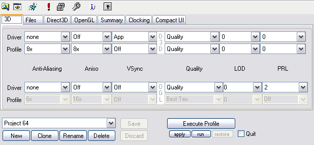

<html>
<title>3DProf - 3D Settings</html>
<body>


<p>


<h2>Changing Current 3D Settings</h2>
<p>

<p>To change the anisotropic filter of Direct3D for example, choose a
value from the list box in row Driver and column Aniso. This change
will be written to Registry immediatly. This behavior is similar to
the nVidia tray icon menu.

<h2>Changing Profile 3D Settings</h2>

<p>To change the profile-preference fot the anisotropic filter of Direct3D for example, choose a
value from the list box in row Profile and column Aniso. This change
will be written to the Profile immediatly. (But as always, the
profiles will not saved to disk until Save button is hit).

<h2>Disabling 3D Settings</h2>

<p>Disabling 3D settings can be useful to make for example OpenGL-only
profiles, or profiles which only do clocking, but leave 3D settings
alone.

<p>If you don't want for example any OpenGL settings in a profile,
then disable the entire Profile row of OpenGL by right-clicking on the
row label (the label named Profile). This will affect all OpenGL
setting on Main tab an Extra OpenGL tab.

<p>You can disable the Direct3D row the same way. Or you can just
disable single columns by right-clicking on the column label.

<p>To disable single 3D Options, just right click direct into its
control box.

<p>To disable all 3D Settings, just do a right-click on Profile labels
of both D3D and OGL.

<h2>Creating A Profile</h2>
<p>

<p>Hit New button.

<p>

<p>Enter a new name into to the textfield. Then hit OK button.

<h2>Configure Game Executable and Parameters</h2>

<p>A game executable can be choosen by hitting Game button or by
dragging a file into the text box right beside that Game button.

<p>Parameters to the game can be typed into the text box right besides
the game-file text box.

</body>
</html>